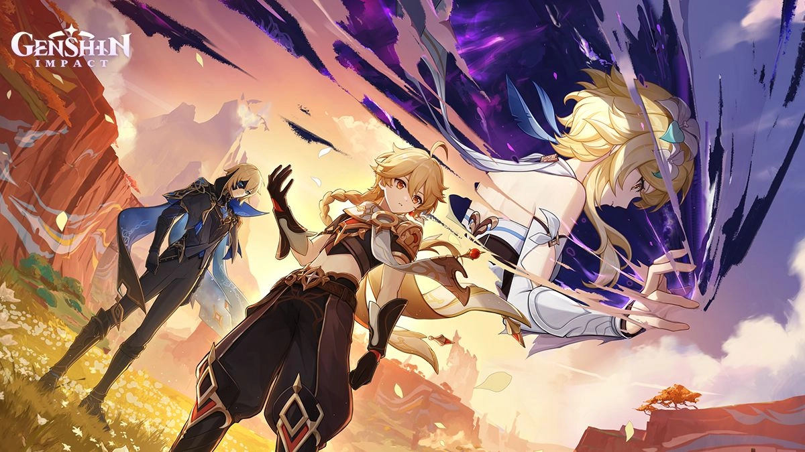

Patch 5.7 Update
Genshin Impact version 5.7, titled “A Space and Time for You,” is set to release globally on June 18, 2025.
Expect new characters like Skirk and Dahlia, exciting in-game events, Archon Quest continuation, and “...quality-of-life improvements,
and an exciting new endgame mode—but no new map zones have been announced.”